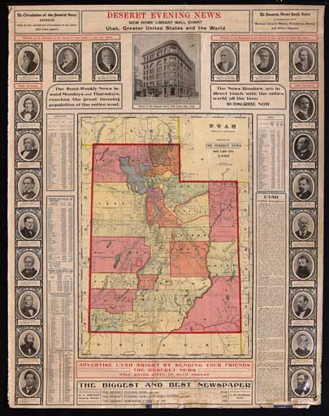

Click on the chart for an expanded view.

This chart has been digitized and some of the contents are presented here. Based on the dated information, it was published sometime between July 1907 and the end of 1908.
For an interactive page to explore the places and map of Utah, Click here
(Note: this requires a browser capable of XML and XSLC with Javascript - NOT Internet Explorer)
This wall chart has three double-sided pages. The first concerns itself with the State of Utah, On the back of the first page is a detailed list of places and transportation for the state. The second page describes the United States of America and the third, the world.
Below is the text of the "Brief Description" included on the front:
GOVERNMENT. The Governor is elected for four years; his succession is vested in: (1) the Secretary of State; (2) the President of the Senate. Senators are elected for four years, Representatives for two years; Legislative sessions are biennial and limited to 60 days.
EDUCATION. The public schools are under the management of a State Superintendent, county superintendents and district trustees. They are sustained by local taxation; over $1,000,000 are annually spent for public education. The several religious denominations have established many schools of a high order. The private educational organizations among the Mormons are very numerous. The University of Utah at Salt Lake City, the Brigham Young University at Provo, and Brigham Young College and the Utah Agricultural College at Logan are chief among educational institutions.
CHIEF CITIES. Salt Lake City, the capital, on the east bank of Jordan river, which connects Great Salt and Utah Lakes, is the metropolitan center of a large and productive area, whose fertility is almost exclusively due to artificial means. It was laid out in 1847, in the midst of a desolate wilderness, by a party of 143 Mormons under the leadership of Brigham Young. It has many interesting local features, chief of which is the Mormon Church; its Temple, an enormous structure, costing over $5,000,000, every portion of which is chiselled in granite, was nearly forty years in being built. It was dedicated with most imposing ceremonies by representatives of the Church from all parts of the world in 1893. the Tabernacle, with its immense auditorium, is also an imposing edifice. Here is the University of Utah; hospitals and charitable institutions are numerous. The city's interests are mercantile and manufacturing.
Ogden City. Weber county seat, at the junction of the Weber and Ogden rivers, tributaries of Great Salt Lake, at an elevation of 4,310 feet, is the railroad center of Utah. Its location is such that farming, mining and manufacturing are all prominent in its life. The mountain health resorts in the vicinity present many natural attractions.
Provo City. Utah county seat, on the Provo river and near Utah Lake, 4,555 feet above the sea, at the base of the Wasatch Mountains, is a favored spot for relaxation and rest, and is a very popular summer resort. It is an agricultural region, but has some manufacturing interests also.
Logan. Cache county seat, in the very fertile Cache Valley, is an agricultural center. Here are Brigham Young College and the State Agricultural College.
PRODUCTS AND INDUSTRIES. The chief industry is farming, which is carried on principally by irrigation; wheat, oats, barley, corn, sugar beets, hay and potatoes are the chief crops. It was long claimed that nineteen-twentieths of the State was hopelessly sterile, but under the Mormons and their irrigation methods this is now known to be a serious error. Grain and the products of the forest constituted the principal manufactured articles until recently; smelters, furnaces, foundries, iron works, leather, woolen and sugar factories have been established and are prospering. Utah contains a rich silver producing district; the ore has been found distributed throughout the full extent of the mountain ranges. Large amounts of gold, antimony, copper and magnetic, specular and hematite iron ore are produced. the Great Salt lake, well named, produces a seemingly inexhaustible supply of salt; it is also noted for its extensive beds of sulphur, and for a species of mineral wax. There are also quarries of excellent building stones.
{kind=link}